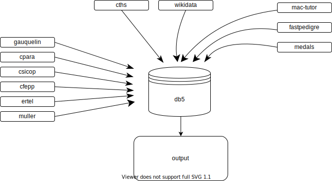

Flow
Data model

Read :
-
1 source is related to 0 or more persons
0 => a source can exist without being related to any person. -
1 person is related to 1 or more sources
1 => a person cannot exist in the database without being related to a source.
-
SourceInformation sources, origin of the data manipulated by g5.
The link between Source and Source permits to handle the notion of parent source.
For example, the source calledA1refers to the html web page cura.free.fr/gauq/902gdA1y.htmlA1has a parent source calledcura, which refers to web site cura.free.fr.
One source can have several parents. -
PersonFamous people who are studied.
-
GroupA set of persons
The link between Group and Group permits to handle the notion of sub-group.
One group can be sub-group of several groups. -
OccupationActivity of a person, ~profession
The link between Occupation and Occupation permits to classify occupations.
For example, a poet is also an artist.
Syntax
The definitions of the fields are expressed in yaml files located with the source code of the model
src/model/
├── Group.php
├── Group.yml
├── Person.php
├── Person.yml
├── Source.php
└── Source.yml
For example, file Person.yml contains an empty person with all its fields empty.
This provides to the code a precise definition of the entities, used as the description of a new type.
All entities of this database have a field called slug, unique within each entity type.
Person
The structure of a person is given bysrc/model/Person.yml
slug:
to-check: # true or false - related to field "notes"
trust:
trust-details: []
sources: []
# key / value pairs
# key = source slug ; value = local id in the given source
ids-in-sources: []
sex:
name:
usual:
given:
family:
spouse:
official: # As written in the birth certificate
family:
given:
nobiliary-particle: false # de d' di del von...
fame: # stage, scene
nicknames: []
alternative: []
# occupation codes
occus: []
birth:
date: # exact date (day and hour) of the birth certificate
tzo: # timezone offset
date-ut: # date converted to Univesal Time
note: # eg "LMT"
place:
name:
c2:
c3:
cy:
geoid:
lg:
lat:
death:
date: # exact date of the birth certificate
tz: # timezone offset
date-ut: # date converted to Univesal Time
note: # eg "LMT"
place:
name:
c2:
c3:
cy:
geoid:
lg:
lat:
notes: [] # array of free notes
raw: []
history: []
Implementation details
The database uses postgresql.Structured fields are stored using jsonb type.
Each entity has a field
id, used as primary key.